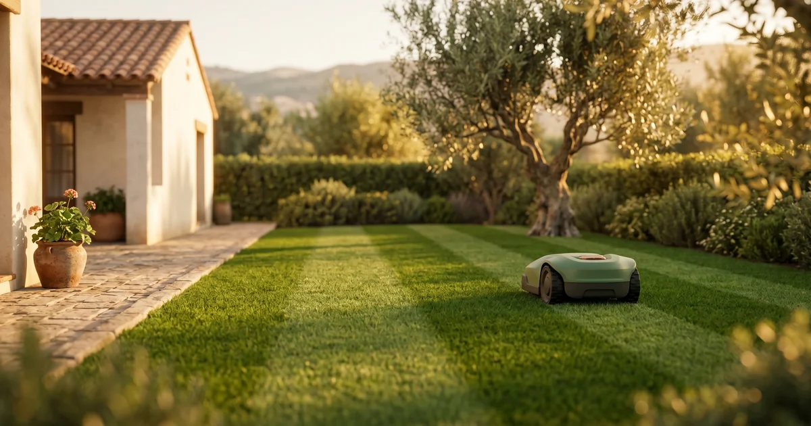
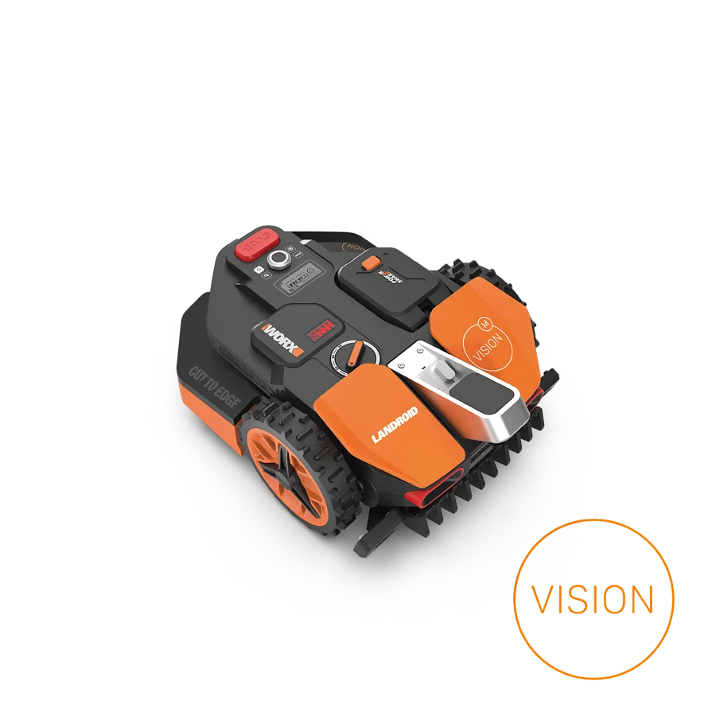
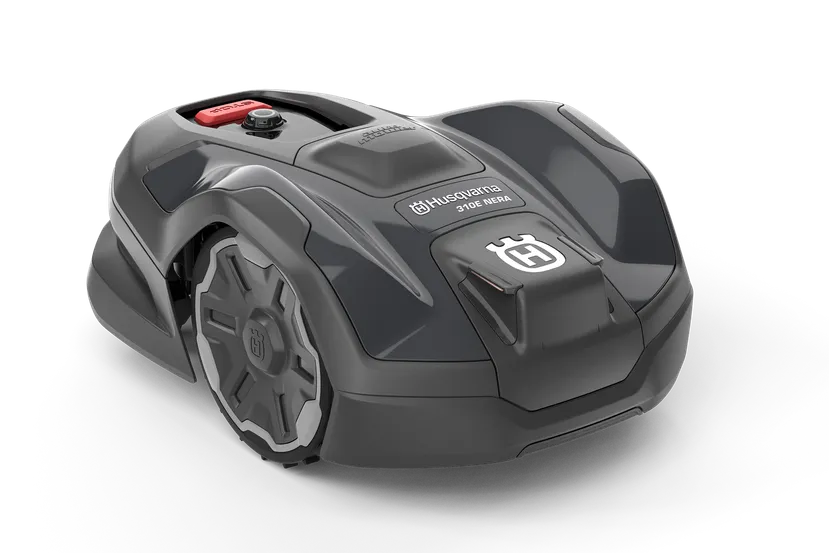
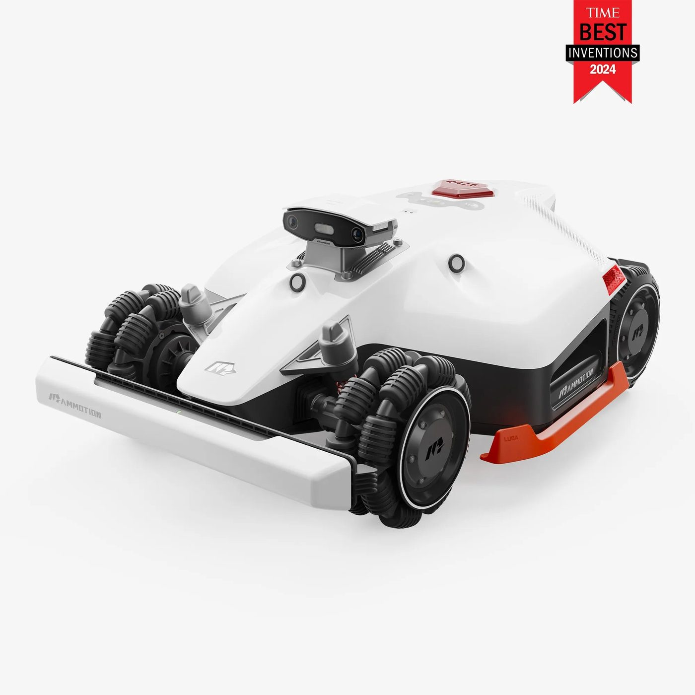
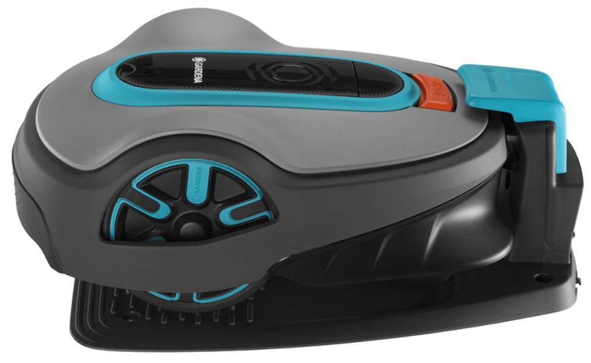
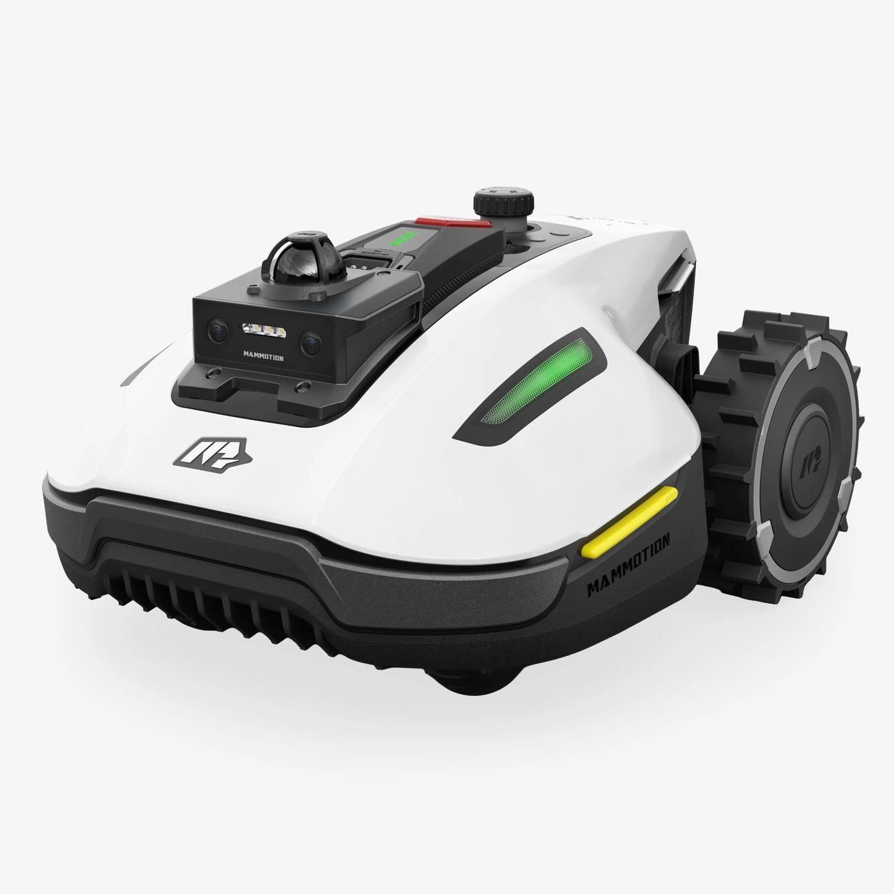
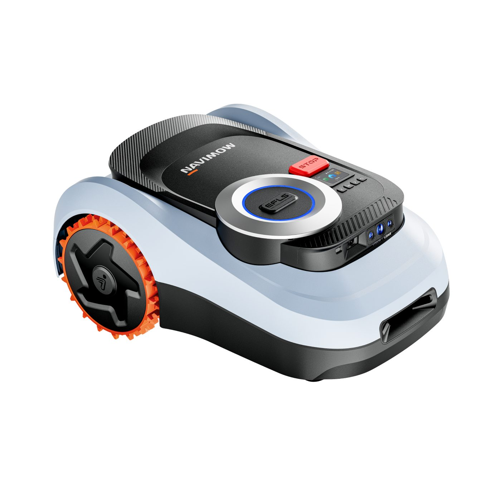

6 modelos comparados sobre fichas oficiales y reviews internacionales, de 1.099 € a 2.499 €, para jardines de 300 a 5.000 m² en España. Y una checklist de 7 preguntas para no pagar más de la cuenta al darle al botón.
Los robots cortacésped ya no necesitan que entierres trescientos metros de cable perimetral por el jardín. En 2026, cinco de nuestros seis finalistas prescinden de ese cable. Y no ha subido el precio — al contrario: el más barato de los seis cuesta menos que el Husqvarna que tu vecino instaló en 2021.
Esta guía está pensada para el comprador español en abril de 2026. Precios verificados en las webs oficiales de Husqvarna, Mammotion, Worx, Gardena y Segway Navimow, cruzados con Amazon.es y Leroy Merlin. No recomendamos ningún modelo que no tenga distribución peninsular con garantía europea. No cobramos por posicionar marcas, y los enlaces de afiliado —cuando se activen— se añadirán después de elegir los finalistas, nunca al revés.

Jardín mediterráneo típico español al atardecer — uno de los escenarios tipo donde se mueven los 6 finalistas de esta guía. Composición ROBOHOGAR.
El filtro cruza tres fuentes: ficha oficial del fabricante, reviews internacionales del último año y verificación de distribución ES con garantía peninsular. Cinco criterios, todos innegociables:
El que falla en dos o más criterios queda descartado. Los seis que cuentan debajo cumplen los cinco o justifican de forma clara por qué se saltan uno.
Precio ES: 1.199 € · PVP oficial · disponible en Leroy Merlin y Amazon.es

Imagen: Worx Landroid Vision M800, modelo sin cable perimetral guiado por cámara 4K y visión con IA. Fuente: Worx Europa, web oficial.
Qué es. El Landroid Vision M800 es de los primeros robots cortacésped que se instala sin cable perimetral, sin satélite y sin LiDAR — con una cámara 4K y un modelo de visión artificial que decide qué es césped, qué es borde, qué es un juguete olvidado y qué es un gato echando la siesta. Worx lleva cinco años liderando volumen de cortacésped robot en Europa y este M800 es su apuesta para el salto generacional.
Lo bueno. Instalación declarada de treinta minutos, sin cable enterrado a pala, para jardines de hasta 800 m² con pendientes del 30%. La plataforma PowerShare de Worx comparte baterías con sus taladros y sopladores, detalle que no se anuncia pero que ahorra al usuario que ya tiene algo de Worx en el trastero. Y los 1.199 € lo convierten en el modelo más barato del mercado español con navegación sin cable.
Lo malo. El ancho de corte es de solo 19 cm, más estrecho que la media del top 2026 (22-40 cm), así que tarda más en rematar un jardín tirando a grande. La IA de la cámara sigue puliéndose en over-the-air updates (actualizaciones remotas enviadas por el fabricante), y las reviews internacionales del primer año señalan confusiones puntuales con flores pequeñas que comparten tono con el césped. Nada grave, pero conviene saberlo antes de plantarle dalias al lado del césped.
Para quién. Dueño de un jardín mediano español (400-800 m²) que no quiere cables enterrados ni montajes con satélite. El grueso del mercado español cabe aquí.
Nuestra opinión. Es la mejor compra en 2026 para el comprador medio, sin más. Tiene precio humano, instalación rápida y navegación moderna sin pagar por tecnología overkill. La única razón para subir de gama es que tu jardín pase de 800 m² o tengas pendientes por encima del 30%.
Precio ES: en torno a 2.099 € · PVP distribuidores oficiales (la web de Husqvarna no publica precio)

Imagen: Husqvarna Automower 310E NERA, modelo con tecnología EPOS de navegación por satélite. Fuente: Husqvarna España, ficha oficial.
Qué es. Husqvarna es a los cortacésped robot lo que Roomba es a los aspiradores: la marca que abrió el mercado en 1995 y ha cambiado poco el diseño desde entonces. El 310E NERA es su modelo intermedio 2026 con EPOS (Exact Positioning Operating System, el sistema propio de navegación por satélite de Husqvarna), que le permite funcionar sin cable perimetral en jardines de hasta 1.500 m².
Lo bueno. Fiabilidad histórica: los Automower llevan treinta años en el mercado y siguen viéndose ejemplares de doce-quince años en jardines españoles sin reemplazo. Red de servicio técnico con tienda física en casi cualquier capital de provincia. La navegación EPOS funciona con cielo despejado, que es la mayor parte del jardín típico español. Y el nivel de ruido declarado por Husqvarna lo coloca entre los más bajos del top 6.
Lo malo. La pendiente máxima declarada por Husqvarna es del 20%, por debajo del resto del top 6 y del propio Automower 430X NERA (superior en gama). Por eso es el modelo mediano de Husqvarna, no el tope — hay que leer bien la ficha antes de comprar si vives en una pendiente seria. Y el precio ronda los 2.099 €, lo que te saca 900 € por encima del Worx M800 para cubrir un jardín no mucho más grande.
Para quién. El comprador que prioriza marca referente, silencio y soporte técnico cercano por encima del precio. O el que ya tiene un Automower viejo y simplemente quiere sustituirlo por otro Husqvarna.
Nuestra opinión. Es la compra segura de la categoría. Si quieres un robot al que no darle ni una vuelta y que tu vecino reconozca al verlo, el 310E NERA es la elección sin drama. Si además buscas optimizar euros, el Worx de arriba te gana por 900 €.
Precio ES: 2.499 € · PVP oficial · es.mammotion.com + distribuidores ES

Imagen: Mammotion LUBA 2 AWD 5000X, el único del top 6 con tracción 4×4 y pendiente declarada del 80%. Fuente: Mammotion España, web oficial.
Qué es. El LUBA 2 AWD es la bestia del top 6: un robot cortacésped con tracción a las cuatro ruedas, ancho de corte de 40 cm y navegación por RTK (Real-Time Kinematic, un sistema de GPS de precisión centimétrica que usa una antena fija como referencia). Mammotion ha presentado en el CES 2026 incluso una versión superior, el LUBA 3, pero el 2 AWD 5000X sigue siendo el que se vende hoy en España con garantía europea.
Lo bueno. Cubre 5.000 m², sube pendientes de hasta el 80% (unos 38,6° de inclinación, lo que equivale a una cuesta que asusta a cualquiera) y el ancho de 40 cm le permite despachar un jardín grande en una tarde. La combinación de visión por cámara con IA y RTK centimétrico hace que se salte el cable perimetral sin dramas y trace rutas paralelas como si fuera un trabajador de jardinería experimentado.
Lo malo. Los 2.499 € son un desembolso serio, equivale a una cuota de comunidad de vecinos. El peso exacto y el nivel de ruido no los publica Mammotion en la ficha oficial ES, así que si vives en una urbanización con horarios estrictos o tienes suelo de pizarra frágil, mejor preguntar al distribuidor antes de comprar. El RTK requiere una antena fija con buena vista al cielo — si tu jardín tiene árboles frondosos, conviene probar la cobertura antes de firmar el pedido.
Para quién. Chalet o casa de campo con >1.500 m² de jardín, pendientes de verdad y ganas de no volver a pensar en el corte hasta octubre.
Nuestra opinión. Es el único robot del top 6 que merece la pena para jardines realmente grandes. Si tu jardín cabe en 800-1.500 m², el LUBA 2 es sobredimensionado. Por encima de 1.500 m², no hay alternativa mejor en 2026 con garantía peninsular.
Precio ES: 1.188-1.399 € · disponible en Leroy Merlin, Anova Tienda y Amazon.es

Imagen: Gardena Sileno Life 1000, el veterano con cable perimetral de la categoría — 57 dB de ruido y 35% de pendiente máxima. Fuente: Anova Tienda, distribuidor oficial ES.
Qué es. Gardena (grupo Husqvarna) es la marca que llena los lineales de Leroy Merlin y El Corte Inglés con cortacésped robot desde hace quince años. El Sileno Life 1000 es su modelo intermedio con cable perimetral, pensado para jardines de hasta 1.000 m² con distribución sencilla. Sí, el cable sigue existiendo en 2026 — y tiene sus ventajas.
Lo bueno. 57 dB declarados por Gardena (susurro, equivalente a una conversación tranquila) y 35% de pendiente, por encima del propio Husqvarna 310E NERA. SensorCut ajusta el corte según la altura del césped y CorridorCut le permite recorrer pasillos estrechos entre setos sin quedarse atascado. Precio razonable, reposición de piezas en cualquier Leroy de España y una app sencilla en castellano.
Lo malo. Hay que enterrar 100-200 metros de cable perimetral, lo que supone un día completo de trabajo con una pala. Una vez instalado funciona, pero si cambias la distribución del jardín —plantas un árbol nuevo, quitas un cantero— te toca desenterrar y reinstalar. La app Bluetooth es básica comparada con las apps cloud de Mammotion o Segway Navimow; la versión smart con pasarela Wi-Fi se vende aparte.
Para quién. Comprador de jardín estable, clásico, que prefiere una solución conocida y está dispuesto a una instalación pesada a cambio de tranquilidad a tres años vista. También el que confía más en una marca con tienda física cerca que en un fabricante chino con buenas especificaciones.
Nuestra opinión. El Sileno Life es la opción "de toda la vida" para quien no quiere experimentar. Es buena. No la recomendaríamos a quien empieza de cero hoy pudiendo gastar lo mismo en un Worx Vision sin cable, pero sigue teniendo sentido para perfiles conservadores o jardines con distribución complicada donde el cable marca bien la frontera.
Precio ES: 1.099 € · PVP oficial · es.mammotion.com (oferta Pascua 2026 activa)

Imagen: Mammotion YUKA mini 2 1000, uno de los primeros robots cortacésped con LiDAR de 360° por debajo de 1.200 € en España. Fuente: Mammotion España, web oficial.
Qué es. La YUKA mini 2 es la otra jugada de Mammotion para 2026: meter LiDAR de 360° —el mismo tipo de sensor que usan los coches autónomos para mapear su entorno— en un robot de 1.099 €. Sin cable perimetral, sin antena RTK externa, sin cámara cloud. Solo el LiDAR con 60 metros de alcance, un procesador con IA y diez mapas guardados en la nube para gestionar jardines con zonas distintas.
Lo bueno. Es, literalmente, el robot con LiDAR más barato del mercado español. Cubre 1.000 m² con pendientes del 45% (por encima del Worx Vision y del Husqvarna 310E NERA) y el mapeo automático se hace en una primera vuelta sin configuración complicada. Para pequeños jardines irregulares —esos con forma de L o con un patio empedrado en medio— es el único del top 6 que se adapta sin pelearse con el cable perimetral ni con la antena satelital.
Lo malo. Mammotion es una marca emergente en España: la distribución es directa desde su tienda online y algún distribuidor especializado. El servicio técnico es por mensajería devolviendo el robot, no en tienda física. Y Mammotion no publica peso ni nivel de ruido exacto en la ficha oficial ES — en reviews YouTube ronda los 58-60 dB, pero no hay dato auditado. El alcance LiDAR de 60 metros es más que suficiente para 1.000 m², pero no está pensado para jardines más grandes.
Para quién. Early adopter con jardín pequeño-mediano (300-1.000 m²) que quiere tecnología moderna sin pagar el premium de Husqvarna y no le da miedo una marca menos conocida. Perfil LATAM también: es de los pocos del top 6 que Mammotion envía a México, Colombia y Argentina vía es.mammotion.com.
Nuestra opinión. Es el finalista que más nos sorprendió. Si el servicio técnico postventa funciona como la marca promete, es la mejor compra calidad-precio-tecnología del 2026 para jardines medianos. Si no, la cosa cambia. Recomendado con reservas por falta de historial, no por el producto en sí.
Precio ES: 1.399 € · disponible en Amazon.es y navimow.segway.com (pre-pedidos abiertos)

Imagen: Segway Navimow i2 LiDAR 2000, primer robot cortacésped consumer en España con LiDAR solid-state. Fuente: Segway Navimow, ficha oficial.
Qué es. Segway —la marca de los patinetes eléctricos— llevaba dos años empujando en robot cortacésped con su línea Navimow. La novedad de 2026 es el i2 LiDAR: el primer cortacésped consumer del mercado ES con LiDAR solid-state (de estado sólido, sin partes mecánicas que giren, más fiable y más pequeño que el LiDAR tradicional). Cubre hasta 2.000 m² con pendiente del 45%.
Lo bueno. El solid-state es la tecnología que montan los nuevos Tesla y los coches de gama alta europea — verlo en un cortacésped de 1.399 € es, objetivamente, una ganga. Segway ofrece opción NetRTK para añadir precisión centimétrica en jardines con poca cobertura satelital, y la navegación combinada (LiDAR + visión) ha recibido reviews sólidas fuera de España en estos primeros meses de 2026.
Lo malo. Es un modelo en fase de pre-pedidos y primeras entregas — Segway Navimow lanzó oficialmente el i2 LiDAR en enero de 2026 y el stock en Amazon.es va entrando a gotas. El ancho de corte exacto no aparece en la ficha oficial ES (en la comunicación EU ronda los 22-28 cm), detalle que tocará verificar al recibir el pedido o llamando al distribuidor. Y el soporte técnico en España sigue siendo incipiente, menos maduro que el de Husqvarna o Gardena.
Para quién. Comprador técnico que quiere tecnología de frontera y acepta pagar el peaje de un lanzamiento reciente. También para quien piensa que el LiDAR mecánico del YUKA mini 2 se va a quedar anticuado en tres años y prefiere asegurar futuro.
Nuestra opinión. Es la apuesta especulativa del top 6. Si te gusta ir por delante y no te importa resolver alguna llamada al servicio técnico, es el robot con mejor techo tecnológico del año. Si prefieres certeza, el Worx M800 o el Husqvarna 310E NERA cubren la inmensa mayoría de los casos con menos riesgo.
Tres robots se quedaron cerca pero fuera. Los listamos por honestidad con el lector que vaya a buscar reviews externas y los encuentre mencionados:
Lo importante, en una fila. Precios actualizados a abril 2026. Fila resaltada = mejor compra global hoy para el comprador español medio.
| Modelo | Precio ES | Para | Estado |
|---|---|---|---|
| Worx Landroid Vision M800 | 1.199€ | Mejor global | A la venta ↗ |
| Husqvarna 310E NERA | ~2.099€ | Premium referente | A la venta ↗ |
| Mammotion LUBA 2 AWD (5000X) |
2.499€ | Jardín grande | A la venta ↗ |
| Gardena Sileno Life 1000 | 1.188-1.399€ | Cable fiable | A la venta ↗ |
| Mammotion YUKA mini 2 (1000) |
1.099€ | LiDAR barato | A la venta ↗ |
| Segway Navimow i2 LiDAR | 1.399€ | Next-gen | Pre-order ↗ |
Fila resaltada: Worx Landroid Vision M800 — mejor compra global hoy para el comprador español medio. Precios verificados en webs oficiales de los fabricantes y contrastados en Amazon.es y Leroy Merlin el 21-abr-2026. Cada badge clickable lleva a la página oficial del fabricante con garantía europea.
Vale para cualquiera de los 6. Si respondes a las siete honestamente, compras bien — o caes en la cuenta de que no necesitas robot todavía. Es el mismo esqueleto que aplicamos en cualquier compra tecnológica de 500-2.500 €: medir antes de pagar.
Si tuviéramos que elegir uno por perfil: Worx Landroid Vision M800 para el comprador español medio con jardín 400-800 m², Husqvarna Automower 310E NERA si valoras la marca referente y el servicio técnico cercano por encima de ahorrar 900 €, Mammotion LUBA 2 AWD para chalet con más de 1.500 m² y pendientes serias, Mammotion YUKA mini 2 si te sobra curiosidad y te falta jardín (por debajo de 1.000 m²). Los otros dos son muy buenos en su hueco — no te equivocas con ninguno.
Una última cosa: si vienes de cortar el césped a mano o con eléctrico de cable, cualquiera de los seis te va a parecer magia durante tres veranos seguidos. Las diferencias entre ellos se notan comparándolos entre ellos. Frente a no tener robot, todos son mundos distintos.
Un jardín español medio de 500 m² cortado con cortacésped manual o eléctrico de cable se come unas 70-90 horas al año entre mayo y septiembre. Es el equivalente a dos semanas completas de trabajo al año. Cualquiera de los seis robots del top 6 amortiza su precio en tres veranos si valoramos ese tiempo al salario mínimo español.
Fuente: INE, tiempo dedicado a tareas domésticas exteriores, media 2023
Más en ROBOHOGAR:
Disclaimer afiliados: este artículo puede contener enlaces de afiliado (Amazon Afiliados España, pendiente de alta). Si compras algo a través de esos enlaces, ROBOHOGAR recibe una pequeña comisión sin coste extra para el lector. Nuestra opinión es independiente y no está patrocinada por ninguna marca citada. Todas las marcas pertenecen a sus respectivos propietarios. Datos y precios verificados el 21-abr-2026 — revisión estacional prevista para febrero-marzo 2027 (pre-temporada primavera).